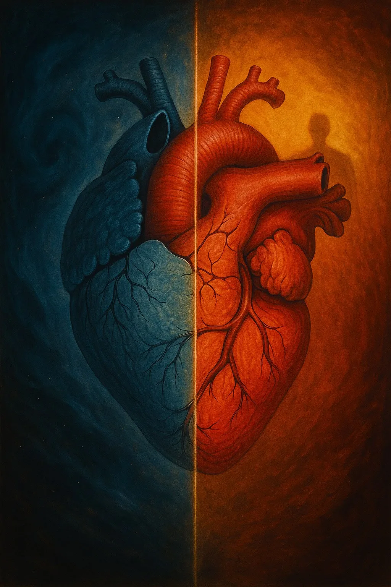

June 5, 2025

The interventricular septum -- the muscular wall dividing the right and left ventricles of the heart -- is one of the most structurally complex regions of cardiac anatomy. It is not merely a partition. It is a dynamic, living boundary where two fundamentally different circulatory pressures meet: the low-pressure pulmonary circuit on the right and the high-pressure systemic circuit on the left. In this convergence lies something that goes far beyond mechanics.
Modern neurocardiology has revealed that the heart possesses its own intrinsic nervous system -- sometimes called the "heart brain" -- consisting of approximately 40,000 neurons. These neurons form a sophisticated network capable of sensing, processing and remembering independently of the central nervous system. The heart communicates with the brain primarily through the vagus nerve, but also via hormonal signals and the pressure waves it generates with every beat. This communication is not one-directional: the heart sends far more information to the brain than the brain sends to the heart.
The septum sits at the epicenter of this neural and mechanical activity. It is one of the first structures to contract during each heartbeat, and its precise timing and coordination determine the efficiency of the entire cardiac cycle. In osteopathic palpation, the septum's rhythm and vitality can be perceived as a subtle but unmistakable presence -- a quality of movement that speaks to the overall coherence of the cardiovascular system.
What makes the septum especially fascinating is how it resonates with ancient and cross-cultural views of the heart. Aristotle considered the heart -- not the brain -- to be the seat of intelligence and the center of the soul. He observed that it is the first organ to form in the embryo and the last to stop at death, and concluded that it must therefore be the body's primary organizing principle.
In tantric traditions, the heart center -- the anahata chakra -- is described as the place where individual consciousness meets universal awareness. It is not merely an emotional center but a point of integration where opposing forces (breath and stillness, contraction and expansion, self and other) converge and find balance. The septum, as the literal meeting point of two circulatory currents, offers a striking anatomical parallel.
Traditional Chinese medicine locates the Shen -- the spirit or consciousness -- in the heart. The heart is considered the "emperor" of the organ system, governing not only circulation but also mental clarity, emotional stability and the capacity for joy. When the Shen is settled, the person is calm, present and radiant. When it is disturbed, restlessness, anxiety and confusion follow.
Some contemplative traditions speak of a "light of the heart" -- a subtle luminosity that can be perceived in deep states of meditation or prayer. Whether understood literally or metaphorically, this concept points to an experience that many patients describe in their own words after heart-centered therapeutic work: a feeling of warmth, openness and clarity that seems to emanate from the center of the chest.
For the osteopath, the heart's septum is not just a structure to be assessed. It is a place where physiology, neurology and something more elusive all converge -- a place where the body's deepest currents meet, and where listening with the hands can reveal dimensions of health that no imaging study can capture.